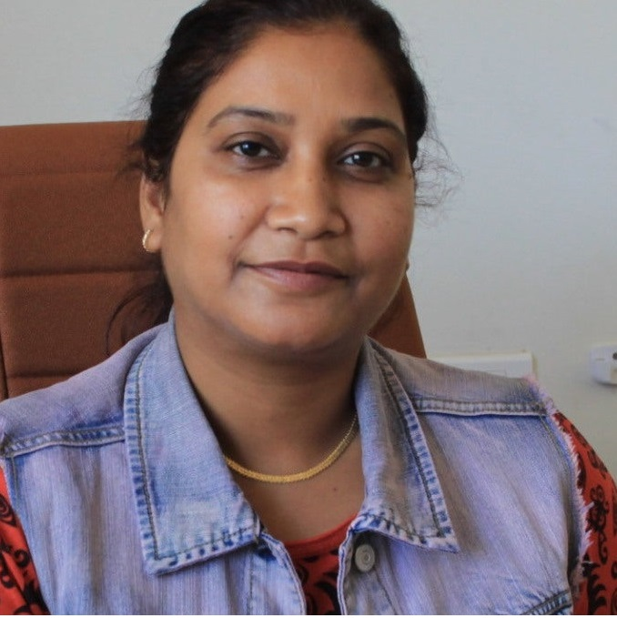

About
Machine Learning Engineer
- Birthday: 14 March 1997
- Phone: +91 9057260535
- City: Kolkata, India
- Age: 23
- Degree: Masters in computer Science
- Email: mustaffahussain473@gmail.com
I hold a post graduate degree from South Asian University, New Delhi in Computer Science. My academic training has been a blend of Economics, Statistics, Mathematics and Computer Science. My interests and comprehension include Machine learning, Deep learning, Bio-informatics, Technology and trends but not limited here. I write on Medium about new trends, techniques and machine learning concepts. Basketball and table tennis are the activities that I like to keep myself engaged in. I am currently based in Kolkata, India
Career Highlights
DDOS Attack: Our startup website was under DDOS attack. Worked 15 hrs straight to mitigate the attack and setup measure in place to check further atttacks.
Publication: Started a publication on Medium named TheCyPhy. We are 17 writers and have 26 published articles in the domain of ML and DL
Research: Worked on a research project under Dr. Reshma Rastogi on Multi-Task Learning , an advanced domain in Machine Learning for the duration of 1 year.
Tech Stack
During my graduation, postgraduate and work experience, I have stumbled upon make frameworks, libraries and software packages.
Programming skills
Database
Version control
Query skills
Cloud
API
Popular frameworks
OS
Developer Skills
Resume
Education
M.Sc Computer Science
2017 - 2019
South Asian University (SAARC est.), New Delhi,India [SAU].
- My course work at SAU included subjects : Machine learning, Mathematical Topics of Computer science, Probability and Statistics, Database management systems, Advanced Data structures and Algorithms, Operating systems, Optimization Techniques, Data mining and Compiler Design etc
- Merit card holder
B.Sc Computer Science
2014 - 2017
Central University of Rajasthan, Ajmer, Rajasthan, India.
- My course work at CURAJ included subjects : Computer Graphics, Differential and Integral calculus, Probability and Distributions, Computer Networks, Micro Economics, Macro Economics and Graph Theory etc.
- Merit card holder
12th - Higher Scecondary
2013 - 2014
Sainik School Kazhakootam, TVM, Kerala, India
- My course work at SSKZM included subjects : Physics, Chemistry, Maths, English, Computer science.
- Merit card holder
Academic achievements
GATE in Computer scinece & engineering
2019 - Present
NTA-NET for Assistant professorship in computer science&applications
2019 - Present
NTA-NET for Assistant professorship in computer science&applications
2018 - Present
Academic conferences
2019
2018
2017
Non academic achievements
- NCC: certificate A,B,C holder.
- Table Tennis: Singles and Doubles winner in Intra University tournament.
- Badminton: Singles and Doubles winner in Intra University tournament.
- Basketball: Represented University at West Zonals, Association of Indian Universites(AIU)
- Hockey: - Represented School at South Zonals, CBSE Clusters
- Painting: - First place in State level Poster Competition, Centre for Development of Advanced Computing(CDAC)
Professional Experience
Machine Learning Trainee
May,2020 - Present
MyWays, New Delhi, India : MyWays is an Artificial Intelligence and Psychometrics empowered Personalized Career Growth Platform for students.
- Developed knowledge graphs for horizontal and vertical career trajectories recommendations with respective trainings and other Insights about career.
- Set up Site Analytics and Cloud logging
- Part Of Core team. Guided 3 ML interns in the duration.
Projects
A Study of Multi-Task learning models
Thesis Work: Modelling, multi task data, Landmine sites data
- The project investigates into Multi-Task learning in SVMs. The project involved reading research articles, papers and devising a solution to improve the existing models in use. Proposed Robust MultiTask Learning Model which is based on Twin SVM for classification.
Amazon Fine Food Reviews
Data preprocessing,vectorization,classification,NLP
- This dataset consists of reviews given by customers on Amazon.com for purchased food items. The data span a period of more than 10 years, including all ~500,000 reviews up to October 2012. Reviews include product and user information, ratings, and a plain text review. The objective is: Given a review, determine whether the review is POSITIVE OR NEGATIVE.
Donar Choose Document Classification
Data preprocessing,vectorization,classification,NLP
- DonorsChoose.org receives hundreds of thousands of project proposals each year for classroom projects in need of funding. A large number of volunteers is needed to manually screen each submission before it's approved to be posted on the DonorsChoose.org website. The goal is to predict whether or not a DonorsChoose.org project proposal submitted by a teacher will be approved, using the text of project descriptions as well as additional metadata about the project, teacher, and school. DonorsChoose.org can then use this information to identify projects most likely to need further review before approval.
Gene Expression Profiling
Genomic data,Data preprocessing,classification,visualization,NLP
- Pancreatic Adenocarcinoma is the third most common cause of death from cancer, with an overall 5-year survival rate of less than 5%, and is predicted to become the second leading cause of cancer mortality in the United States by 2030. In the context of cancer, gene expression profiling can also be used to more accurately classify tumors and understand the heterogeneity within a cancer type. Here I work on PAAD which is gene expression dataset of Pancreatic Adenocarcinoma.
Other works
Scratch Implementations & Concept Implementations- Dimensionality Reduction Analysis: PCA V/s T-SNE
- Breast Cancer Detection
- SCRATCH Develepoment-TFIDF Vectorization
- SCRATCH Develepoment-SGD classifiers : SVM and Logistic Regression
- Regression Analysis
Blogs
I love reading and writing about technology. I started a publication On medium, TheCyPhy. The publication has grown to 17 fellow techies who share the same passion as me. We dominantly write about Data Science and hope to simplify advance concepts to simple form. To join and contribute to the publication drop in Hello !
- All
- TheCyPhy
- By Me
{kind=link}
{kind=link}
{kind=link}
{kind=link}
{kind=link}
{kind=link}
{kind=link}
{kind=link}
{kind=link}
Testimonials
I have known Mustaffa formally as a student for 2 years. I supersvised his thesis work at South Asian University. He did his work in a timely manner. He displayed discipline in his work and maintained a good rapport with his lab mates. He is inquisitive as well as patient and that makes him suitable for research.
Dr. Reshma Rastogi
Associate Professor, School of Computer Science and Mathematics, South Asian University
I have known Mustaffa for 3 years. He was a undergrad student in department of computer science. I taught him Computer graphics, Operating sysytems etc. At all times I have found him to be reliable, hard-working and courteous. I evaluated his graduation minor project where I found him open to suggestions and criticism.
Dr. Mamta Rani
Associate Professor, Department of Computer Science, Central University of Rajaasthan
I was his lab supervisor in South Asian University. I have observed his very closely during the period. I was his senior in the lab and guided him through out his projects, I have seen him pull all nighters when stuck with new concepts. He is confident and a responsible person. Overtime, we have become friends.
Dr. Pritam Anand
PhD South Asian University
Me and Mustaffa go a long way in term of trust and work. We have worked on several projects together and started TheCyPhy together for the the common passion we both shared. He is very supportive and and a great manger.He manages to keep his calm even at extreme situations. He has practical understanding for ML concepts.
Bharat Dadwaria
Co-founder, TheCyPhy
Contact
Lets get in touch
Location:
A108 Adam Street, New York, NY 535022
Email:
info@example.com
Call:
+1 5589 55488 55s